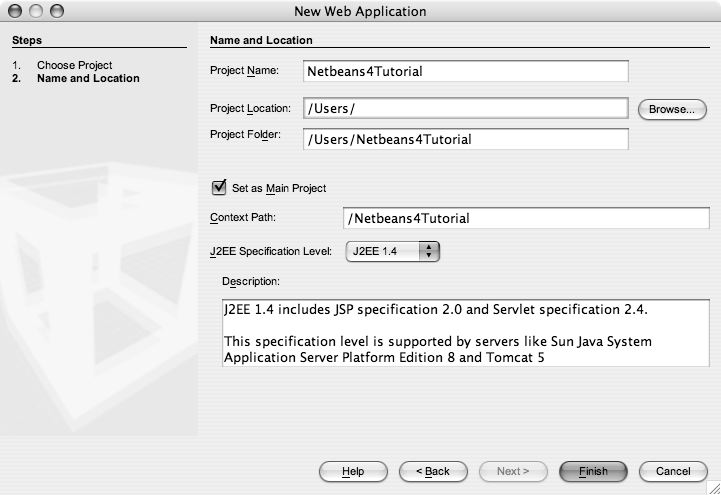
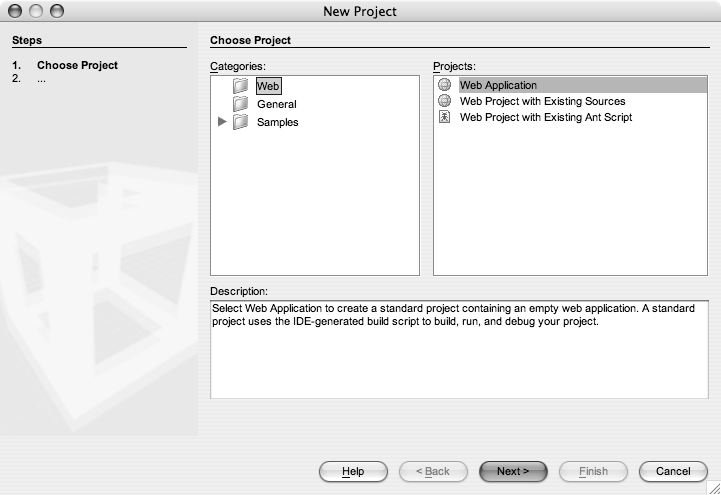
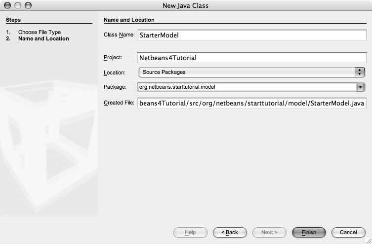
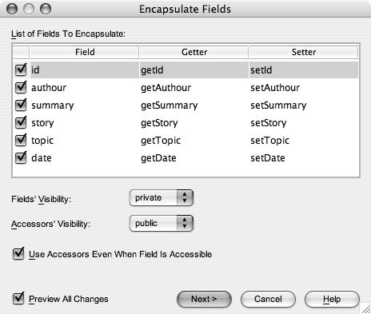
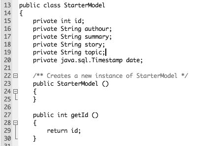
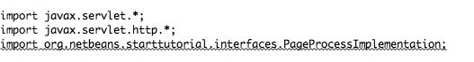
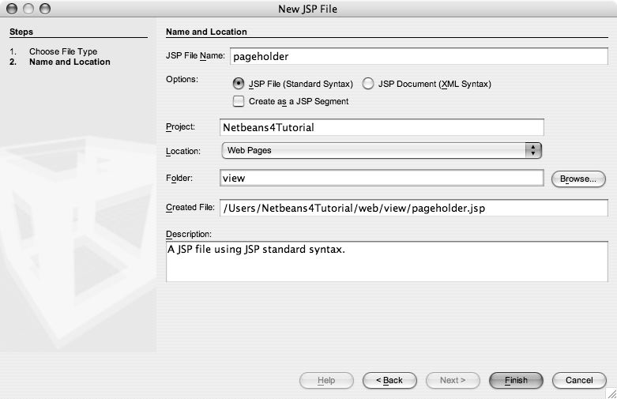
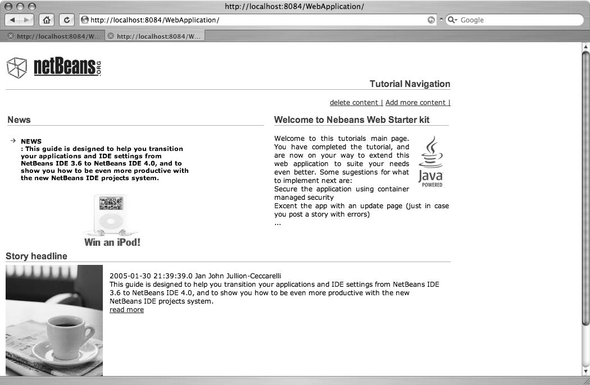

Win With NetBeans コンペティションの一部として Bjorn O. Bakke 氏から寄稿
はじめに
このチュートリアルは、NetBeans 4.0 を使用して、将来の拡張が可能なモデルビュー制御 Web アプリケーションを開発するための基礎を説明することを目的としています。最初に、モデルとしての POJO オブジェクト、一連のビューファイル、およびコントローラを設計します。それが完了したら、JDBC を使用して、ベースとなる MySQL データストアを操作するようにプロジェクトを拡張します。
ファイルとソースのダウンロード
作業の開始
新しい Web アプリケーションの作成
- 「ファイル」>「新規プロジェクト」を選択します。「カテゴリ」で「Web」を選択します。「プロジェクト」で「Web アプリケーション」を選択して、「次へ」をクリックします。

- 「プロジェクト名」で「Netbeans4Tutorial」と入力します。

- 「主プロジェクトとして設定」チェックボックスがすでに選択されていることを確認します。「コンテキストパス」が「/Netbeans4Tutorial」であることに注意してください。
- 「説明」パネルで、サーブレット仕様 2.4 が説明されていることに注意してください。このプロジェクトでは EL (式言語) を広範囲に使用しようとしているため、これが必要条件です。
- 「完了」をクリックします。IDE によって、$PROJECTHOME/Netbeans4Tutorial プロジェクトフォルダが作成されます。このプロジェクトフォルダには、ソースおよび、プロジェクトの Ant スクリプトなどのプロジェクトメタデータのすべてが含まれます。IDE で HellowWeb プロジェクトが開きます。プロジェクトの論理構造は「プロジェクト」ウィンドウで、ファイル構造は「ファイル」ウィンドウで確認できます。
POJO モデルの作成
モデルの作成
- プロジェクトノードと「ソースパッケージ」ノードを展開します。「ソースパッケージ」ノードには、空の「デフォルトパッケージ」ノードだけ含まれていることに注意してください。
- 「ソースパッケージ」ノードを右クリックし、「新規」>「Java クラス」を選択します。
- 「クラス名」テキストボックスに「StarterModel」と入力し、「パッケージ」コンボボックスに「org.netbeans.starttutorial.model」と入力します。
- 「完了」をクリックします。

フィールドとメソッドの追加
- これで NetBeans によって空のクラス定義が生成されたため、次にそのクラス定義にいくつかのフィールド名を設定します。
- これらのフィールド名をモードに入力またはコピーします。
- フィールド名を右クリックし、「リファクタリング」メニューからカプセル化を選択します。
-
private int id;
private String authour;
private String summary;
private String story;
private String topic;
private java.sql.Timestamp date;
- 次のようになっているはずです。すべてのチェックボックスを有効にし、「次へ >」を押します。

この図は、すべてのフィールドを選択して、これらのフィールドのアクセス用メソッドと「変異子 (mutator)」を生成するようすを示しています。

最後に、インポート文と下のメソッドを starterModel クラスに追加して完成させます。
import java.util.ArrayList;
import java.util.List;
public List getpopulateStarterModelArray ()
{
List starterModelarray = new ArrayList ();
StarterModel s =
getModel (1, "Hello World ", "The First part of ", "the tutorial is ", "over",new java.util.Date ());
StarterModel st =
getModel (2, "now ", "it is ", "time to ", "add some more pages ",new java.util.Date ());
StarterModel stu =
getModel (3, "But first we have ", "to discuss", "what actually", "happened here dont you think",new java.util.Date ());
starterModelarray.add (s);
starterModelarray.add (st);
starterModelarray.add (stu);
return starterModelarray;
}
private StarterModel getModel (int a, String b,String c,String d,String e,java.util.Date f )
{
StarterModel sModel = new StarterModel ();
sModel.setId (a);
sModel.setAuthour (b);
sModel.setStory (c);
sModel.setTopic (d);
sModel.setSummary (e);
sModel.setDate (new java.sql.Timestamp (new java.util.Date ().getTime ()));
return sModel;
}
コントローラの作成
フィールド名の変更
- プロジェクトノードと「ソースパッケージ」ノードを展開します。「ソースパッケージ」ノードには、空の「デフォルトパッケージ」ノードだけ含まれていることに注意してください。
- 「ソースパッケージ」ノードを右クリックし、「新規」>「Java クラス」を選択します。
- 「クラス名」テキストボックスに「FrontControllerFilter」と入力し、「パッケージ」コンボボックスに「org.netbeans.starttutorial.controller」と入力します。
- 「完了」をクリックします。
取得メソッドと設定メソッドの生成
- コピーの参考までに、FrontControllerFilter クラスを次に示します。
package org.netbeans.starttutorial.controller;
import java.io.*;
import javax.servlet.*;
import javax.servlet.http.*;
import org.netbeans.starttutorial.interfaces.PageProcessImplementation;
-
public class FrontControllerFilter implements Filter
{
protected FilterConfig config = null;
public void init (FilterConfig filterConfig)
{
config = filterConfig;
}
public void doFilter ( ServletRequest req, ServletResponse res,
FilterChain chain ) throws IOException, ServletException
{
if (!(req instanceof HttpServletRequest))
{
throw new ServletException ("Filter requires a HTTP request.");
}
HttpServletRequest request = (HttpServletRequest)req;
HttpServletResponse response = (HttpServletResponse)res;
String uri = request.getRequestURI ();
int begin = uri.lastIndexOf ("/")+1;
int end = uri.lastIndexOf (".");
String name = "pageholder";
if (begin < end)
{
name = uri.substring (begin, end);
}
boolean doFilter = true;
// 暗黙の MVC 制御コンポーネントの読み込みと実行を試行します。
try
{
Object o = Class.forName ("org.netbeans.starttutorial.viewimplementation."+name).newInstance ();
if (!(o instanceof PageProcessImplementation))
{
throw new ServletException ("no interface");
}
PageProcessImplementation control = (PageProcessImplementation)o;
doFilter = control.processPageRequest (request, response);
}
catch (ClassNotFoundException e)
{
System.out.print ("\nClassNotFoundException \n" + e);
}
catch (InstantiationException e)
{
System.out.print ("\nInstantiationException \n" + e);
}
catch (IllegalAccessException e)
{
System.out.print ("\nIllegalAccessException \n" + e);
}
if (doFilter)
{
chain.doFilter (request, response);
}
}
public void destroy ()
{
}
}
ここでインポート文のエラーが表示されたことに注意してください。これは、この特定のインタフェースをまだ作成していないためです。それは次に行います。

次のようなパッケージ名とクラス名を持つ新しい Java クラスを作成します。
package org.netbeans.starttutorial.interfaces;
import javax.servlet.http.HttpServletRequest;
import javax.servlet.http.HttpServletResponse;
import java.io.IOException;
import javax.servlet.ServletException;
/**
* だれでも使用できる公開インタフェース
* 本日のタスク: コントローラを参照して、そもそもなぜこのインタフェースを使用するのかを把握する
*/
public interface PageProcessImplementation
{
public boolean processPageRequest (HttpServletRequest request,HttpServletResponse response) throws ServletException, IOException;
}
ビューページの作成
デフォルトの JavaServer Pages ファイルの編集およびクラスの背後にあるコードの作成
- プロジェクトノードと「Web ページ」ノードを展開します。IDE によって、デフォルトの JavaServer Pages ページ index.jsp が自動的に作成されています。ここでは、これは使用しません。
- 「Web ページ」ノードを右クリックし、「新規」>「JSP」を選択します。
- 「JSP ファイル名」テキストボックスに「pageholder」と入力し、フォルダフィールドに「view」と入力します。
- 「完了」をクリックします。
- 
- pageholder.jsp ファイルが次のようになるようにペーストまたは入力します。
<%@page contentType="text/html"%>
<%@page pageEncoding="UTF-8"%>
<%--
The taglib directive below imports the JSTL library. If you uncomment it,
you must also add the JSTL library to the project. In the project properties
choose Build -> Compiling sources and use the Add Libray... button to add
the JSTL 1.1 library.
--%>
<%@taglib uri="http://java.sun.com/jsp/jstl/core" prefix="c"%>
<html>
<body>
<c:forEach var="starterModel" begin="0" items="${arrayofstarterobjects}">
<c:out value="${starterModel.id}" />
<br>
<c:out value="${starterModel.authour}" />
<c:out value="${starterModel.story}" />
<c:out value="${starterModel.summary}" />
<c:out value="${starterModel.topic}" />
<p>
</c:forEach>
Lets print out todays date to:
<c:forEach var="starterModel" begin="0" end ="0" items="${arrayofstarterobjects}">
${starterModel.date}
</c:forEach>
</body>
</html>
- プロジェクトノードと「ソースパッケージ」ノードを展開します。
- 「Web ページ」ノードを右クリックし、「新規」>「JSP」を選択します。
- 「JSP ファイル名」テキストボックスに「pageholder」と入力し、フォルダフィールドに「view」と入力します。
- 「完了」をクリックします。
-
package org.netbeans.starttutorial.viewimplementation;
import java.io.IOException;
import javax.servlet.ServletContext;
import javax.servlet.ServletException;
import javax.servlet.http.HttpServletRequest;
import javax.servlet.http.HttpServletResponse;
import org.netbeans.starttutorial.controller.*;
import org.netbeans.starttutorial.model.*;
import org.netbeans.starttutorial.interfaces.PageProcessImplementation;
/**
*
* @author
*/
public class pageholder implements PageProcessImplementation
{
public boolean processPageRequest (HttpServletRequest request, HttpServletResponse response) throws ServletException, IOException
{
ServletContext sc = request.getSession ().getServletContext ();
try
{
StarterModel starterModel = new StarterModel ();
request.setAttribute ("arrayofstarterobjects", starterModel.getpopulateStarterModelArray ());
}
catch(Exception e)
{
System.out.print ("Exception in class pageholder");
}
return true;
}
}
web.xml ファイルへの変更
- プロジェクトノードと「Web-INF」ノードを展開します。
- web.xml ファイルをダブルクリックしてエディタで開きます。
- web.xml ファイルが次のようになるようにペーストまたは入力します。
-
<?xml version="1.0" encoding="UTF-8"?>
<web-app xmlns="http://java.sun.com/xml/ns/j2ee" xmlns:xsi="http://www.w3.org/2001/XMLSchema-instance" xsi:schemaLocation="http://java.sun.com/xml/ns/j2ee http://java.sun.com/xml/ns/j2ee/web-app_2_4.xsd" version="2.4">
<filter>
<filter-name>ControlFilter</filter-name>
<filter-class>org.netbeans.starttutorial.controller.FrontControllerFilter</filter-class>
</filter>
<filter-mapping>
<filter-name>ControlFilter</filter-name>
<url-pattern>/view/*</url-pattern>
</filter-mapping>
<session-config>
<session-timeout>30</session-timeout>
</session-config>
<welcome-file-list>
<welcome-file>
index.html
</welcome-file>
<welcome-file>
index.htm
</welcome-file>
<welcome-file>
view/pageholder.jsp
</welcome-file>
</welcome-file-list>
</web-app>
プロジェクトのコンパイルと実行
必要なライブラリの追加
- プロジェクトノードを右クリックし、「プロパティー」を選択します。
- 「構築」|「ソースのコンパイル」を選択します。
- 「ライブラリを追加」をクリックします。
- 「JSTL 1.1」を選択し、「ライブラリを追加」をクリックします。
- 「了解」をクリックします。
プロジェクトの構築
- 「構築」>「主プロジェクトを構築」(F11) を選択します。プロジェクトが構築されます。
主プロジェクトの実行
- 「実行」メニューから「実行」>「主プロジェクトを実行」(F6) を選択します。出力がすべて見えるように、「出力」ウィンドウのタイトルバーをダブルクリックして最大化します。Ant は最初に Netbeans4Tutorial.war を構築し、次にそれを使用して Netbeans4Tutorial をコンパイルします。最後に、デフォルトサーバーを使用して Web アプリケーションを配備します。「出力」ウィンドウのタイトルバーを再度ダブルクリックして最小化します。
- 「ファイル」ウィンドウを選択し、「HelloWeb」プロジェクトノードを展開します。構築クラスファイルは build フォルダにあります。構築 WAR ファイルは dist フォルダにあります。
- F6 キーを押して、プログラムを再実行します。新しくコンパイルする必要があるものは何もなく、単にプログラムが実行されます。
第 2 部 - データベースの追加
データベースストアの作成
- MySQL データベースがまだインストールされていない場合は、インストールする必要があります。
- 最新の MySQL JDBC コネクタを http://dev.mysql.com/downloads/connector/j/3.1.html からダウンロードしていることを確認してください。
- MySQL を起動します。
- NetBeans で実行時タブを開き、データベースと「ドライバ」ノードを展開します。
- 右クリックして「ドライバを追加」を選択します。
- mysql_connector.jar ファイルを見つけ、「追加」を選択します。
- 「了解」を押して終了します。
- 次に、新しく作成された MySQL ノードを選択し、右クリックして「接続」を選択します。
- 今作成した MySQL 接続を選択します。
- データベース URL として「jdbc:mysql://localhost/」と入力し、必要に応じてデータベースのユーザー名とパスワードを指定します。「了解」を押します。
- 「jdbc:mysql/localhost」ノードを右クリックして「コマンドを実行」を選択し、コマンド CREATE DATABASE nbstarterkit を挿入して実行します。これで、ユーザー独自の小さなデータベースが作成されました。
- ここで MySQL ノードを切り離して削除します。
- 手順 8 から 10 を繰り返しますが、代わりに jdbc:mysql://localhost/nbstarterkit の URL を使用します。
- 次のコマンドを実行して表を作成します。CREATE TABLE `content` (
`id` int(11) NOT NULL auto_increment,
`author` varchar(50) default NULL,
`summary` text,
`story` text,
`topic` varchar(50) default NULL,
`date` datetime default NULL,
PRIMARY KEY (`id`)
) TYPE=MyISAM;
- 次に、次のコマンドを実行して表を設定します。
INSERT INTO `content` (`id`,`author`,`summary`,`story`,`topic`,`date`) VALUES ("1","Jan John Jullion-Ceccarelli","This guide is designed to help you transition your applications and IDE settings from NetBeans IDE 3.6 to NetBeans IDE 4.0, and to show you how to be even more productive with the new NetBeans IDE projects system.","This guide is designed to help you transition your applications and IDE settings from NetBeans IDE 3.6 to NetBeans IDE 4.0, and to show you how to be even more productive with the new NetBeans IDE projects system.","NEWS","2005-01-30 21:39:39");
JDBC に対応した完全なプロジェクトの実行
- MySQL が起動し実行中であることを確認します。
- mysql-connector.jar をプロジェクトに追加します。
- 「実行」メニューから「実行」>「主プロジェクトを実行」(F6) を選択します。出力がすべて見えるように、「出力」ウィンドウのタイトルバーをダブルクリックして最大化します。Ant は最初に Netbeans4Tutorial.war を構築し、次にそれを使用して Netbeans4Tutorial をコンパイルします。最後に、デフォルトサーバーを使用して Web アプリケーションを配備します。「出力」ウィンドウのタイトルバーを再度ダブルクリックして最小化します。
- 「ファイル」ウィンドウを選択し、「HelloWeb」プロジェクトノードを展開します。構築クラスファイルは build フォルダにあります。構築 WAR ファイルは dist フォルダにあります。
- F6 キーを押して、プログラムを再実行します。新しくコンパイルする必要があるものは何もなく、単にプログラムが実行されます。
